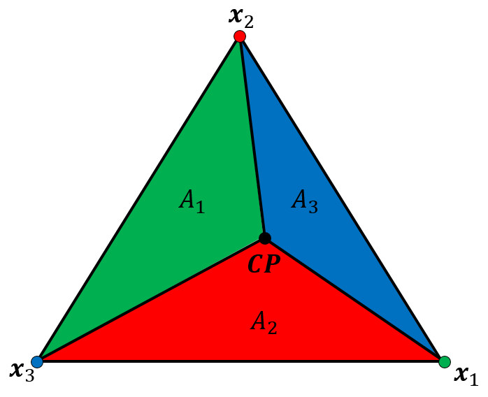

墙-网格单元耦合方案
下文所述的耦合方案同时适用于网格单元网格点和结构单元节点。在下文描述中，粗体变量表示向量，非粗体变量表示标量。
PFC 墙被创建为与网格单元面或基于壳的结构单元表面重合。墙由边相连的三角面组成，其顶点速度和位置可作为时间的函数指定。耦合逻辑的做法是：取与墙面片的接触力和力矩，并在面片顶点处确定等效力系。这些力连同刚度贡献一起传递给网格点/节点。此外，还会检查刚度和力判据（见 wall-zone update-tolerance 和 wall-structure update-tolerance 命令），以触发网格单元/结构单元更新。这些更新会改变几何参数以及网格单元/结构单元刚度，以确保数值稳定性。注意，要使耦合在循环过程中生效，力学计算必须处于大应变模式，由 设置大变形模式命令（model large-strain） 命令设置。下文讨论给出网格单元具有三角面时的结果（注意：基于壳的结构单元始终为三角形）。当网格单元面为四边形时，将其拆分为两个三角形。此时，力是针对与墙面片对应的三个网格点计算的，而不是针对四边形面的全部四个网格点。这与一维结构单元连接到网格单元的情形不同：在后一种情形下，权重基于所有四边形面上的力作用点计算，且不努力平衡由此产生的力矩。
在计算球-面片和子颗粒-面片接触力/力矩的力-位移定律之后，立即在感兴趣的各网格点和/或节点处求解等效力。设某个球与一个三角墙面片接触，该面片覆盖着网格单元面或基于壳的结构单元。\(\textbf{C}\) 表示接触点的位置，\(\textbf{CP}\) 定义墙面片上距 \(\textbf{C}\) 最近点的位置。\(\textbf{C}\) 的位置在 PFC 手册关于面状墙逻辑的描述中定义。把数值从 \(\textbf{CP}\) 外推到三角形顶点（这些顶点与网格单元网格点或结构单元节点重合）的最简单方法，是重心插值/外推。取三角形三个顶点的位置为 \(\textbf{x}_i, i = 1 ... 3\)，如下图所示。把用 \(\textbf{CP}\) 连接三角形各顶点所得三个三角形的面积定义为 \(A_i, i = 1 ... 3\)，三角形总面积为 \(A = \sum_{i=1}^{3} A_i\)。在下文描述中，所有求和均从 \(i=1...3\) 开始。


图 1：重心插值方案示意图。与某个顶点相对的三角形的颜色，与该顶点的颜色一致。
每个顶点的权重因子由与该顶点相对的三角形面积除以三角形总面积确定，得到 \(w_i = \frac{A_i}{A}\)。注意 \(\sum w_i = 1\)，从而使从 \(\textbf{CP}\) 外推到各顶点的取值之和等于 \(\textbf{CP}\) 处的值。当完全计算模式关闭时（见 wall-zone full-computation 和 wall-structure full-computation 命令），接触力和平动刚度通过该公式外推到网格点和节点。对结构单元耦合，接触力矩由黏结产生，转动刚度也按此方式外推到节点。重心外推并不保证外推的力和力矩与接触力/力矩一致，也就是说，由顶点力（可能还有顶点力矩）在 \(\textbf{CP}\) 处产生的总力矩可能并不如下文所述那样平衡。
取 \(\textbf{r}_i, i = 1...3\) 为从 \(\textbf{CP}\) 指向各三角形顶点的向量（即 \(\textbf{r}_i = \textbf{x}_i - \textbf{CP}\)）。取作用在每个网格点或节点上的力为 \(\textbf{F}_i, i = 1...3\)，作用在 \(\textbf{C}\) 上的接触力为 \(\overline{\textbf{F}}\)，由黏结产生的接触力矩为 \(\overline{\textbf{M}_b}\)。由于接触点 \(\textbf{C}\) 与面片上的最近点 \(\textbf{CP}\) 可能不在同一位置，作用在面片上的总力矩由下式给出
其中 \(\times\) 是叉积。
当完全计算模式激活时，耦合方案确定完全一致的等效力系，使得
以及
取 \(\hat{\mathbf{n}}\) 为指向三角形法向方向的单位向量。沿三角形表面的力向量由下式给出
(4)\[\overline{\textbf{F}}^{shear} = \overline{\textbf{F}} - \overline{\textbf{F}} \cdot \hat{\mathbf{n}}\]
Take
若 \(\overline{\textbf{F}}^{shear} = \textbf{0}\)，则通过将一个不与 \(\hat{\mathbf{n}}\) 重合的笛卡尔坐标轴方向与之作叉积来确定 \(\hat{\mathbf{s}}\) 方向。
等效力系在局部轴系中确定，其中 x 分量与 \(\hat{\mathbf{n}}\) 方向重合，y 分量与 \(\hat{\mathbf{s}}\) 方向重合。取 \(\textbf{r}_i^{l}\)、\(\textbf{F}_i^{l}\)、\(\overline{\textbf{F}}^{l}\) 和 \(\overline{\textbf{M}}^{l}\) 位于该局部系中，并分别对应于 \(\textbf{r}_i\)、\(\textbf{F}_i\)、\(\overline{\textbf{F}}\) 和 \(\overline{\textbf{M}}\)。由于点 \(\mathbf{CP}\) 位于三角形表面上，各 \(\textbf{r}_i^{l}\) 的 x 分量均为 0，即 \(r_{i,x}^{l} = 0\)。这一简化使得可以直接通过求解联立方程来确定该局部系中顶点力的 x 分量 \(F_{i,x}^{l}\)
以及
以下三个方程仍需用 6 个未知量求解：
以及
令力的 y 分量按照上述重心权重项进行分配，即 \(F_{i,y}^{l} = w_i \overline{F}_y^l\)。因此，重心加权作用于三角形平面内最大接触力的方向。由此假设可得到以下两个方程，其中含有三个未知量：
以及
如果不附加额外约束，这个欠定方程组将有无穷多个解。控制方程本身不能明确决定应采用何种约束来得到等效系统。本研究引入的附加约束为
被用于提供一个特解。该约束等价于：若在局部 z 方向对每个网格点或节点施加力，则局部系中从 \(\textbf{CP}\) 指向各三角形顶点的向量的点积之和为 0。所得力随后转换为全局轴系，并施加到相应的网格单元网格点或结构单元节点上。此外，此时会触发网格单元/结构单元更新。
在求解网格单元或结构单元的运动方程后，立即按照对应网格点或节点的位置和速度设置墙面片顶点的位置和速度。向网格点或节点添加刚度的操作，直接在网格单元或结构单元更新过程中完成。若接触处存在转动刚度，也必须将其计入，以确保稳定性。等效平动刚度通过将转动刚度的大小除以 \(\sum \parallel r_i \parallel\) 来确定。
| 这些内容对您有帮助吗？… | FLAC3D © 2019, Itasca | 原文更新于 2020 年 10 月 8 日 |